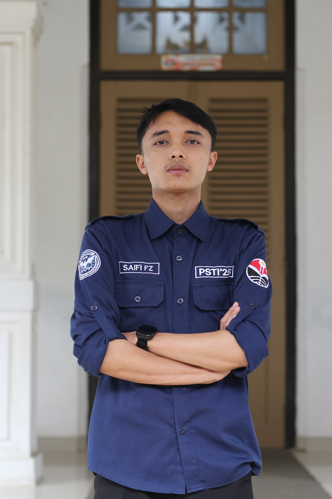

Mahasiswa Pendidikan Sistem dan Teknologii Informasi
Website ini berisi informasi singkat tentang diri saya, beberapa project yang pernah saya kerjakan, serta informasi kontak. Website ini juga menjadi tempat bagi saya untuk menerapkan dasar-dasar HTML yang telah dipelajari.
Silakan klik About untuk mengetahui Profil saya